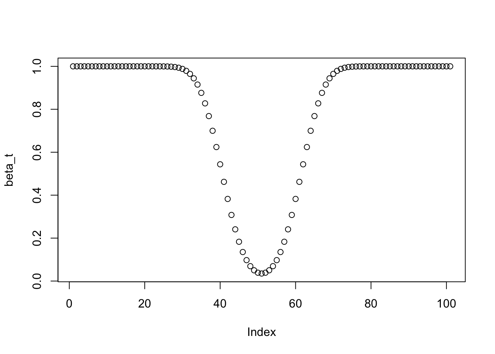
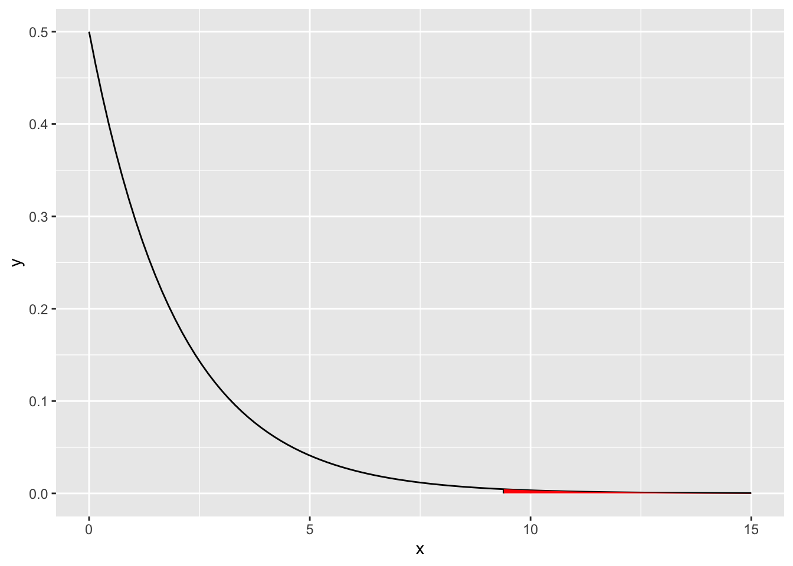

Chapter 16 Null hypothesis significance testing
This chapter deals with null hypothesis significance testing.
The students are expected to acquire the following knowledge:
- Binomial test.
- t-test.
- Chi-squared test.
Exercise 16.1 (Binomial test) We assume \(y_i \in \{0,1\}\), \(i = 1,...,n\) and \(y_i | \theta = 0.5 \sim i.i.d.\) Bernoulli\((\theta)\). The test statistic is \(X = \sum_{i=1}^n\) and the rejection region R is defined as the region where the probability of obtaining such or more extreme \(X\) given \(\theta = 0.5\) is less than 0.05.
- Derive and plot the power function of the test for \(n=100\).
- What is the significance level of this test if \(H0: \theta = 0.5\)? At which values of X will we reject the null hypothesis?
# a
# First we need the rejection region, so we need to find X_min and X_max
n <- 100
qbinom(0.025, n, 0.5)## [1] 40## [1] 60## [1] 0.02844397## [1] 0.9823999X_min <- 39
X_max <- 60
thetas <- seq(0, 1, by = 0.01)
beta_t <- 1 - pbinom(X_max, size = n, prob = thetas) + pbinom(X_min, size = n, prob = thetas)
plot(beta_t)
## [1] 0.0352002Exercise 16.2 (Long-run guarantees of the t-test)
- Generate a sample of size \(n = 10\) from the standard normal. Use the two-sided t-test with \(H0: \mu = 0\) and record the p-value. Can you reject H0 at 0.05 significance level?
- (before simulating) If we repeated (b) many times, what would be the relative frequency of false positives/Type I errors (rejecting the null that is true)? What would be the relative frequency of false negatives /Type II errors (retaining the null when the null is false)?
- (now simulate b and check if the simulation results match your answer in b)
- Similar to (a-c) but now we generate data from N(-0.5, 1).
- Similar to (a-c) but now we generate data from N(\(\mu\), 1) where we every time pick a different \(\mu < 0\) and use a one-sided test \(H0: \mu <= 0\).
##
## One Sample t-test
##
## data: x
## t = 0.6779, df = 9, p-value = 0.5149
## alternative hypothesis: true mean is not equal to 0
## 95 percent confidence interval:
## -0.4934661 0.9157694
## sample estimates:
## mean of x
## 0.2111516# we can not reject the null hypothesis
# b
# The expected value of false positives would be 0.05. The expected value of
# true negatives would be 0, as there are no negatives (the null hypothesis is
# always the truth).
nit <- 1000
typeIerr <- vector(mode = "logical", length = nit)
typeIIerr <- vector(mode = "logical", length = nit)
for (i in 1:nit) {
x <- rnorm(10)
my_test <- t.test(x, alternative = "two.sided", mu = 0)
if (my_test$p.value < 0.05) {
typeIerr[i] <- T
} else {
typeIerr[i] <- F
}
}
mean(typeIerr)## [1] 0.052## [1] 0.007024624# d
# We can not estimate the percentage of true negatives, but it will probably be
# higher than 0.05. There will be no false positives as the null hypothesis is
# always false.
typeIIerr <- vector(mode = "logical", length = nit)
for (i in 1:nit) {
x <- rnorm(10, -0.5)
my_test <- t.test(x, alternative = "two.sided", mu = 0)
if (my_test$p.value < 0.05) {
typeIIerr[i] <- F
} else {
typeIIerr[i] <- T
}
}
mean(typeIIerr)## [1] 0.719## [1] 0.01422115# e
# The expected value of false positives would be lower than 0.05. The expected
# value of true negatives would be 0, as there are no negatives (the null
# hypothesis is always the truth).
typeIerr <- vector(mode = "logical", length = nit)
for (i in 1:nit) {
u <- runif(1, -1, 0)
x <- rnorm(10, u)
my_test <- t.test(x, alternative = "greater", mu = 0)
if (my_test$p.value < 0.05) {
typeIerr[i] <- T
} else {
typeIerr[i] <- F
}
}
mean(typeIerr)## [1] 0.012## [1] 0.003444977Exercise 16.3 (T-test, confidence intervals, and bootstrap) Sample \(n=20\) from a standard normal distribution and calculate the p-value using t-test, confidence intervals based on normal distribution, and bootstrap. Repeat this several times and check how many times we rejected the null hypothesis (made a type I error). Hint: For the confidence intervals you can use function CI from the Rmisc package.
set.seed(1)
library(Rmisc)
nit <- 1000
n_boot <- 100
t_logic <- rep(F, nit)
boot_logic <- rep(F, nit)
norm_logic <- rep(F, nit)
for (i in 1:nit) {
x <- rnorm(20)
my_test <- t.test(x)
my_CI <- CI(x)
if (my_test$p.value <= 0.05) t_logic[i] <- T
boot_tmp <- vector(mode = "numeric", length = n_boot)
for (j in 1:n_boot) {
tmp_samp <- sample(x, size = 20, replace = T)
boot_tmp[j] <- mean(tmp_samp)
}
if ((quantile(boot_tmp, 0.025) >= 0) | (quantile(boot_tmp, 0.975) <= 0)) {
boot_logic[i] <- T
}
if ((my_CI[3] >= 0) | (my_CI[1] <= 0)) {
norm_logic[i] <- T
}
}
mean(t_logic)## [1] 0.053## [1] 0.007088106## [1] 0.093## [1] 0.009188876## [1] 0.053## [1] 0.007088106Exercise 16.4 (Chi-squared test)
- Show that the \(\chi^2 = \sum_{i=1}^k \frac{(O_i - E_i)^2}{E_i}\) test statistic is approximately \(\chi^2\) distributed when we have two categories.
- Let us look at the US voting data here. Compare the number of voters who voted for Trump or Hillary depending on their income (less or more than 100.000 dollars per year). Manually calculate the chi-squared statistic, compare to the chisq.test in R, and discuss the results.
- Visualize the test.
Solution.
- Let \(X_i\) be binary variables, \(i = 1,...,n\). We can then express the test statistic as \[\begin{align} \chi^2 = &\frac{(O_i - np)^2}{np} + \frac{(n - O_i - n(1 - p))^2}{n(1 - p)} \\ &= \frac{(O_i - np)^2}{np(1 - p)} \\ &= (\frac{O_i - np}{\sqrt{np(1 - p)}})^2. \end{align}\] When \(n\) is large, this distrbution is approximately normal with \(\mu = np\) and \(\sigma^2 = np(1 - p)\) (binomial converges in distribution to standard normal). By definition, the chi-squared distribution with \(k\) degrees of freedom is a sum of squares of \(k\) independent standard normal random variables.
n <- 24588
less100 <- round(0.66 * n * c(0.49, 0.45, 0.06)) # some rounding, but it should not affect results
more100 <- round(0.34 * n * c(0.47, 0.47, 0.06))
x <- rbind(less100, more100)
colnames(x) <- c("Clinton", "Trump", "other/no answer")
print(x)## Clinton Trump other/no answer
## less100 7952 7303 974
## more100 3929 3929 502##
## Pearson's Chi-squared test
##
## data: x
## X-squared = 9.3945, df = 2, p-value = 0.00912## Clinton Trump other/no answer
## less100 7952 7303 974
## more100 3929 3929 502csum <- apply(x, 2, sum)
rsum <- apply(x, 1, sum)
chi2 <- (x[1,1] - csum[1] * rsum[1] / sum(x))^2 / (csum[1] * rsum[1] / sum(x)) +
(x[1,2] - csum[2] * rsum[1] / sum(x))^2 / (csum[2] * rsum[1] / sum(x)) +
(x[1,3] - csum[3] * rsum[1] / sum(x))^2 / (csum[3] * rsum[1] / sum(x)) +
(x[2,1] - csum[1] * rsum[2] / sum(x))^2 / (csum[1] * rsum[2] / sum(x)) +
(x[2,2] - csum[2] * rsum[2] / sum(x))^2 / (csum[2] * rsum[2] / sum(x)) +
(x[2,3] - csum[3] * rsum[2] / sum(x))^2 / (csum[3] * rsum[2] / sum(x))
chi2## Clinton
## 9.394536## Clinton
## 0.009120161x <- seq(0, 15, by = 0.01)
df <- data.frame(x = x)
ggplot(data = df, aes(x = x)) +
stat_function(fun = dchisq, args = list(df = 2)) +
geom_segment(aes(x = chi2, y = 0, xend = chi2, yend = dchisq(chi2, df = 2))) +
stat_function(fun = dchisq, args = list(df = 2), xlim = c(chi2, 15), geom = "area", fill = "red")